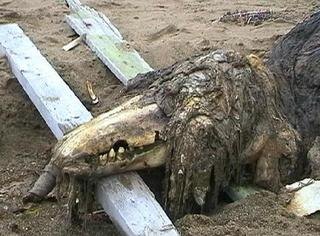

SCP-682
項目等級：Keter
特殊收容措施：SCP-682必須被盡快消滅。目前，SCP團隊無法摧毀SCP-682，只能對它造成大量物理傷害。 SCP-682需被收容在5m x 5m x 5m的容器中，其中25cm厚的加固抗酸鋼板內襯在所有內壁上。收容容器需以鹽酸填滿，直到SCP-682完全沉沒且無力反抗。如果SCP-682試圖移動、說話或破壞收容措施，必須快速做出反應並且視情況以全力應對。

由於SCP-682經常嘗試破壞收容措施，難以收容與無力化，以及具有使基金會曝光的高度威脅，它被收容在[已編輯]站點。基金會將盡力使用資源以確保該地點五十（50）千米內無人開發。
描述：SCP-682是一體型巨大、起源未知的爬行類生物。它表現出極高的智能，在它與SCP-079有限的接觸時間內，觀察到它們之間進行了非常複雜的交流。 SCP-682表露出對所有生命的憎惡，收容期間與它的數次交流印證了這一點。 （參見附錄682-B）。
SCP-682一直被觀察到具有極高的力量、速度和迅速反應能力，不過具體程度會隨其形態而改變。 SCP-682物理軀體的生長和改變非常之快，通過進食或蛻皮，SCP-682能夠使體型增大或減小。 SCP-682可以從它攝取的任何物質中獲得能量，無論是有機物還是無機物。 SCP-682的消化似乎由鼻孔內的過濾鰓輔助，該鰓能吸收任何溶液中的有用物質，使其在被收容於酸液中時能夠持續再生。 SCP-682的再生能力和適應能力非常驚人，且SCP-682在87%的身體被毀或腐爛的情況下仍然可以移動和交流。
若發生收容失效，SCP-682將由所有待命的機動特遣隊進行追蹤與再捕獲，每支隊伍都不得少於七（7）名隊員。至今（██-██-████）為止，對象的突破嘗試已有十七（17）次，其中六（6）次突破成功。
<記錄開始，快進至00h-21m-52s>
██████博士：現在回答，你為什麼殺了那些農民？
SCP-682：（無言語交流）
██████博士：如果你現在不說話，這次交流就到此結束然後我們會把你移回——
SCP-682：（難以理解的聲音）
██████博士：再說一遍？ （將麥克風靠近）
SCP-682：（難以理解的聲音）
██████博士：大聲說出來。 （對人員D-085說）把麥克風再移近點。
SCP-682：……他們（難以理解的聲音）……
██████博士：（對人員D-085說）這個麥克風才收到這點聲音，再移近些！
人員D-085：它的喉嚨已經毀了，你看！它沒法說話——（喘氣和尖叫）
SCP-682：（似乎攻擊了D-085的身體）……他們……令人作嘔……
██████博士：（從房間撤退）
<記錄結束>